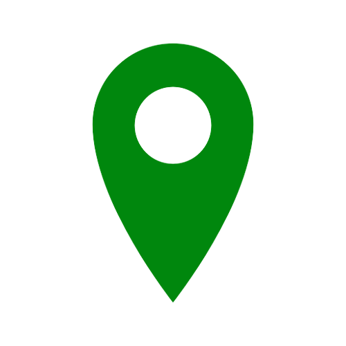

<ion-header>
  <ion-toolbar style="display: inline-flex;">
    <ion-title>  
    </ion-title>
    <ion-buttons slot="start">
      <ion-back-button></ion-back-button>
    </ion-buttons>
    <ion-button color="light" class="json ion-margin-top" (click)="cargarJSON()"> Cargar Incidentes </ion-button> 
    <!-- <input type="file" (change)="onFileSelected($event)" style="display: none" #fileInput>
    <ion-button color="light" (click)="fileInput.click()">Seleccionar archivo</ion-button> -->
    <ion-item class="ion-float-end usuario" ><span>{{ user }}</span></ion-item>
    <ion-button color="translucent" class="ion-float-end ion-margin-end ion-margin-top" *ngIf="user === ''" (click)="realizarLogin()">
      <input type="image" class="login" alt="Login" src="./../../assets/icon/login.png">
    </ion-button>    
  </ion-toolbar>
</ion-header>
<ion-content>

        <ion-content class="map-container">
          <!-- <google-map
            height="100%"
            width="100%"
            [center]="center">
            <map-marker
              *ngFor="let point of points"
              [position]="point.position"
              [title]="point.title"
              [clickable]="true"
              (click)="showInfoWindow(point)">

            </map-marker>
            <map-marker *ngFor="let estacion of estacionesClima"
              (map-marker-click)="marcadorEstacion(estacion)"
              [position]="estacion.position"
              [title]="estacion.nombre + '->'+ estacion.clima"
              [icon]="icon">
            </map-marker>
            <map-marker (map-marker-click)="marcadorClicado()"
              *ngFor="let estacionW of pointsWeather"
              [position]="estacionW.position"
              [title]="estacionW.title"
              [icon]="iconV">
            </map-marker>
            <map-polyline *ngFor="let linea of lines"
            [path]="linea.position"
            >
            </map-polyline> 
          </google-map> -->
          <google-map
            [center]="center"
            [zoom]="mapZoom"
            height="100%"
            width="100%"
            (mapClick)="closeInfoWindow()"
          >
            <map-marker
              *ngFor="let point of points"
              [position]="point.position"
              [title]="point.title"
              [clickable]="true"
              (mapClick)="showInfoWindow(point)"
            ></map-marker>

            <map-marker *ngFor="let estacion of estacionesClima"
              (map-marker-click)="marcadorEstacion(estacion)"
              [position]="estacion.position"
              [title]="estacion.nombre + '->'+ estacion.clima"
              [icon]="icon"
              (mapClick)="showInfoEstacion(estacion)">
            </map-marker>
            <map-marker *ngFor="let estacionW of pointsWeather"
              [position]="estacionW.position"
              [title]="estacionW.title"
              [icon]="iconV"
              (mapClick)="showInfoWindow(estacionW)">
            </map-marker>
            <map-polyline *ngFor="let linea of lines"
            [path]="linea.position"
            >
            </map-polyline> 
          </google-map>

          <div class="floating-text">
            <ion-card>
              <ion-card-content>
                <p>
                   Incidente
                </p>
                <p>
                   Estaciones de Aemet
                </p>
                <p>
                   Incidentes por Clima
                </p>
              </ion-card-content>
            </ion-card>
          </div>
          <div class="floating-textbox">
            <ion-card class="cardText">
              <ion-card-content class="cardText">

                  <pre>{{ textoInfo }}</pre>

              </ion-card-content>
            </ion-card>
          </div>
        </ion-content>
</ion-content>
